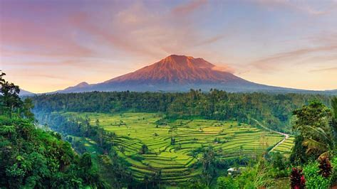

Gunung Agung adalah gunung tertinggi di pulau Bali dengan ketinggian 3.142 mdpl. Gunung ini terletak di kecamatan Rendang, Kabupaten Karangasem, Bali, Indonesia. Pura Besakih, yang merupakan salah satu Pura terpenting di Bali, terletak di lereng gunung ini.
Gunung Agung adalah gunung berapi tipe strato, gunung ini memiliki kawah yang sangat besar dan sangat dalam yang kadang-kadang mengeluarkan asap dan uap air. Dari Pura Besakih gunung ini tampak dengan kerucut runcing sempurna, tetapi sebenarnya puncak gunung ini memanjang dan berakhir pada kawah yang melingkar dan lebar.
Dari puncak gunung Agung kita dapat melihat puncak Gunung Rinjani yang berada di pulau Lombok di sebelah timur, meskipun kedua gunung tertutup awan karena kedua puncak gunung tersebut berada di atas awan, kepulauan Nusa Penida di sebelah selatan beserta pantai-pantainya, termasuk pantai Sanur serta gunung dan danau Batur di sebelah barat laut.